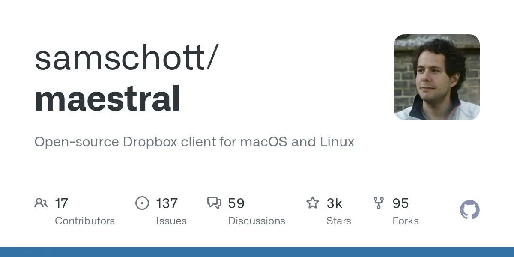
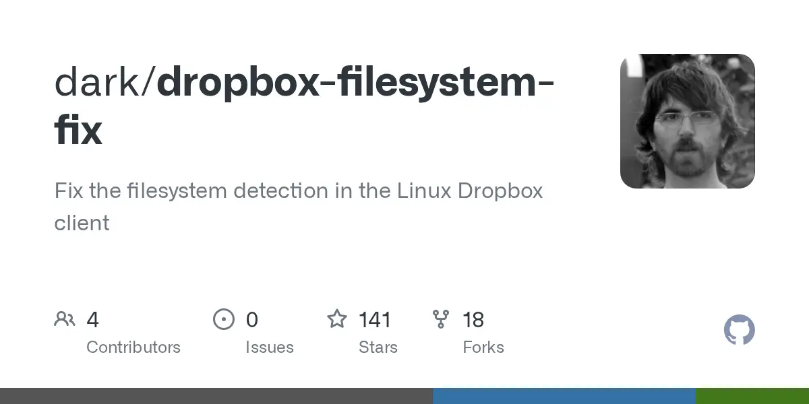
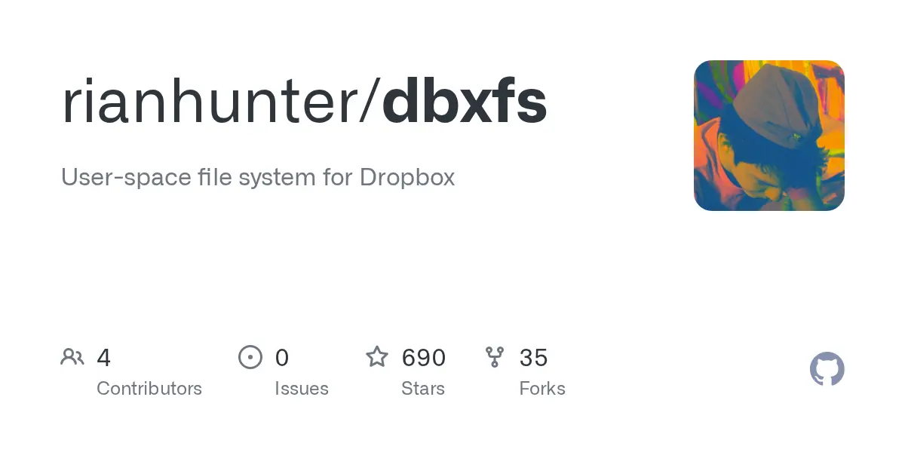

Which cells are lit, and which are dead
The ext4-only rule died in 2019 — btrfs, zfs and xfs all sync. What is actually dark in 2026 is online-only files, one shared on-disk folder across a dual boot, and every escape hatch that used to route around the official client.
Run the official client on Linux
btrfs, zfs and xfs are supported filesystem types in 2026 — a btrfs root is not a blocker [1]
One Dropbox folder across the dual boot
Not "unsupported" — arithmetically impossible. The two clients share no filesystem [2]
Source repos inside Dropbox
Concurrent changes "can result in a corrupted Git repository" [3] — move them to ~/code
Filesystems the client will place its folder on
Checked at the folder path, not at /Block-level encryption; the visible filesystem is ext4 or btrfs, and that is what gets checked [1]
Not on the list, so the client refuses the folder outright rather than degrading. The community shim dropbox-filesystem-fix ⭐ 141 patched the detection call via LD_PRELOAD — treat it as dead [8]
Dropbox announces ext4-only from 7 November — file identity lives in extended attributes and it wanted one guaranteed xattr implementation [5][6]
Build 77.3.127 reverses it: zfs, xfs, btrfs and eCryptFS come back [7]
Five types listed, requirement is on the partition holding the Dropbox folder — not on / [1]
btrfs is supported. Snapshot rollback is still the thing that hurts you.
Dropbox has no notion of "this whole tree just went back in time." Rolling back a subvolume containing ~/Dropbox presents the client with a mass of deletions and reverted files, which it dutifully pushes upstream. Inside a shared folder that is not a local event — "If you delete a file inside a shared folder… that file disappears from the shared folder for everyone" [9].
This is an inference from documented delete semantics rather than a Dropbox statement — but the failure mode is exactly what makes it dangerous.
MitigationPut ~/Dropbox on its own btrfs subvolume that Timeshift and snapper do not snapshot, and use Dropbox's own version history / Rewind as the time machine for that tree [10].
Windows ↔ Linux feature parity
Struck cells = the gapdropbox / dropbox.py)~/.dropbox-dist/dropboxd, linked via a pasted URL [17]Net: the Linux client's sync engine is at parity. What is missing is online-only files — which matters exactly when a shared folder is bigger than your disk.
The Linux app page carries a live warning — "The Dropbox desktop app for Linux is changing" — with dependency floors of GTK 2.24, GDK 2.24, Glib 2.40 and LibAppIndicator 12.10, last updated 9 February 2026 [18]. There is no systemd unit; dropbox autostart y writes an XDG autostart entry [15], and a user unit calling dropboxd is the standard headless pattern [17].
The dual-boot intersection is empty
Not unsupported — impossiblefilesystem
C:\Users\you\Dropbox
On NTFS, linked as device 1 of 3.
/home/you/Dropbox
On ext4 or btrfs, linked as device 2 of 3 [21].
↑ ↓ both sync via the cloud
Two independent folders, one account. Costs a second full local copy — and never reboot with unsaved editors open.
What a shared folder does that a private one doesn't
Blast radius includes other peopleQuota is charged to everyone
A shared folder counts against the quota of every member, unless all members sit on the same Standard / Advanced / Enterprise team or Family plan [19].
A folder bigger than your disk is all-or-nothing
With no online-only files on Linux [11], selective sync is the only lever — and it is folder-granular [13]. It is per-device, so Windows can keep the full copy.
Your delete is everyone's delete
Edit permission means a local removal propagates to all members; permanent deletion requires folder ownership [9].
A dual-booter counts as two members
Conflicted copies come from simultaneous edits, offline edits, or a file left open in an auto-saving app [20]. An editor open in Windows when you reboot into Linux is the "left open on another user's computer" case.
Two of your three device slots
Dropbox Basic caps at three linked devices — one machine dual-booting consumes two of them [21].
Five ways a repo inside Dropbox breaks
All five worsen in a shared folderSymlinks
A symlink pointing outside Dropbox syncs as "individual symlink files, and don't sync the files referenced by the symlink". Windows Dropbox supports neither symlinks nor junctions and flags them with error indicators [22] — so the classic "symlink node_modules out" trick hands your Windows collaborator a broken artefact.
Case collisions
Dropbox's namespace is case-insensitive — "you can't have a file called Hello.doc and one called hello.doc" [24]. Linux is case-sensitive, so Makefile alongside makefile, or a case-only rename, gets mangled in transit [23]. \ / : * ? " < > | are restricted and names cap near 255 characters including path [34].
.git corruption
"The desktop client is not aware of how Git manages it's on-disk format, so if there are concurrent changes or delays in syncing, it's possible to have conflicts that result in a corrupted Git repository" [3]. Packfile rewrites during gc, HEAD/index churn and ref updates are all racy against a background syncer.
Churn and inotify watches
node_modules, bin/, obj/ and .next/ generate thousands of short-lived files, one inotify watch per directory. The historic default max_user_watches was 8192; Dropbox support recommends 100000; kernels 5.11+ auto-scale to 1048576 with ≥8 GB RAM [25].
Exclusion is blunt
There is no .dropboxignore. Selective sync is folder-granular and per-device [13]; com.dropbox.ignored is per file or folder, not pattern-based, needs the default folder location, and the ignored content "will be deleted from the Dropbox server and your other devices" [14] — inside a shared folder, your collaborators lose it too [9].
The arrangement that avoids all five
Code lives in git, hosted on a remote, cloned to ~/code outside Dropbox on every machine. If a repo genuinely must live in a shared folder, use git-remote-dropbox ⭐ 3.1k, which talks to the API directly and never touches the desktop client [3].
The escape hatches that shut
All three archived
Archived 2026-07-28
Archived Nov 2025dark/dropbox-filesystem-fix ⭐ 141
The LD_PRELOAD shim that patched the filesystem check. Tested only to client 89.4.278; its author's own advice was to switch to Maestral [8].

Mirror archived 2021rianhunter/dbxfs ⭐ 690
The FUSE mount still works and is still the only online-only route on Linux, but the GitHub mirror was archived and development moved off-platform [31].
Alternative clients, ranked for a shared-folder workload
FS · Shared · Selective · Headless · MaintainedThe recommended arrangement
Eight decisionsSources
34 citationsThe staged ladder: what each rung of a Windows→Linux move actually proves
What each rung proves, what it structurally hides, the go/no-go signal, and the cost of retreating.
WSL2 as rung zero — what it proves, and the exact wall it hits
WSL2 retires every userland risk and none of the machine-ownership risks; here is where the line falls.
Dual-boot Linux next to Windows in 2026 without wrecking the Windows install
A second NVMe, two OSes ignorant of each other, and Linux picked from the firmware boot menu.
Trial hardware and VM paths for evaluating Linux before you commit
Live USB first, then a full install on an external NVMe SSD — everything else is a detour.
Living in both OSes: running Windows and Linux for months without your setup rotting
One source of truth per asset class, replicated by a tool that knows the OS difference.
Exit criteria and the blocker inventory: decide the Linux switch on evidence, not vibes
A fill-in blocker inventory, tickable go/no-go criteria, and a pre-committed rollback date.